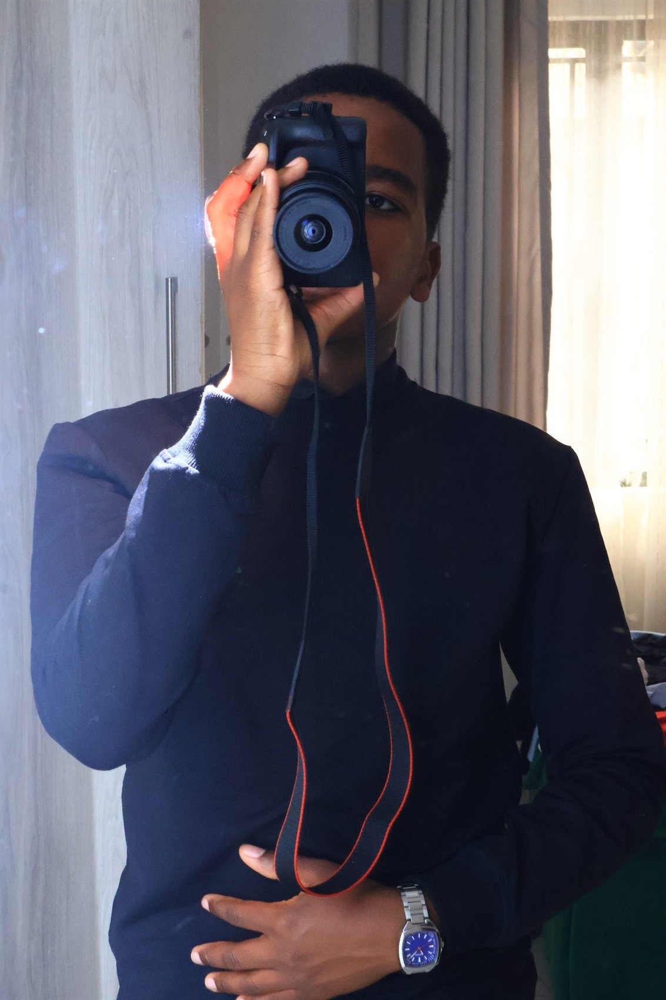

Small by choice.
Personal by nature.
Schings Digital is the personal brand of Samuel Takudzwa Chingosho—built around thoughtful media, creative flexibility and a real connection with the people behind each project.

One name.
A few ways to tell a story.
Schings comes from Sammychings27, Samuel’s childhood nickname and long-time online identity. “Sammychings” grew from his name; 27 is his favourite number.
He started working in media in 2022. Today, he works solo, with collaborators joining when a project calls for it. Schings Digital is the foundation for a future company—built patiently through good work, partnerships and stronger client relationships.
Young at heart.
Serious about the details.
A fresh, flexible approach, a broad range of media skills and a personal connection from the first conversation to the final delivery.
Each project starts with a detailed brief. Quotes, timelines and revision rounds are shaped around the work. Feedback is gathered before final delivery, and requested edits are handled as agreed. I work independently, bringing in collaborators when a brief calls for extra hands. That flexible setup keeps each project personal while making room for partnerships.
Work across the country. PA equipment supply in Kwekwe and Gweru.
Work across Gauteng, with Kempton Park as the base. Travel farther when costs are covered.
Growing with
good people.
The long-term goal is to register Schings Digital, build a team, invest in better equipment, expand into physical marketing, and form deeper partnerships and client relationships. Physical marketing is a future direction, not a current service.